library(PhyloSim)
library(parallel)
library(dplyr)
library(tidyverse)
# root <- "~/Uni/Master/MA/" # work from local machine
root <- "~/cyber_synch/" # work from uni bayreuth serverPhyloSim Changes
0.0.0.1 Abbreviations
[n,p]DD = [neagitve, positive] density dependence
1 Changes in Phylosim - Master Thesis Andrea Ingrosso: Negative- and Positive Density Dependece
To investigate my research question, I modified PhyloSim. Here, I shall present the changes and explain them.
Research question: Is dynamic feedback in the density dependent process (as in Schreder et al. 2020) needed to increase species richness and simulate the, empirically observed, correaltion between abundance and stabilization strength (Yenni et al. 2012) / stab. CDD (Hülsmann et al. 2024). Or, can the partitioning in positive (e.g., mutualistic) and negative (e.g., competitive) density dependence with different distance- and specificity kernel alone show mentioned pattern ?
I added negative and positive density dependence process. The strenght, distance, and specificity (with regard to the phylogenetic differences between focal and neighbor cell) can be defined by the user. The higher the specificity, the stronger the impact of (phenomenologically-) genetically identical/similar neighbors.
1.1 Specificty of Density Dpendence: Exponential Kernel
Following Schroeder et al. 2020, the specificity of pathogens and mutualists towards their hosts was an important (Random Forest) microbial parameter to generate a strong correlation between abundance and stabilizing CDD. Therefore, I included this parameter in Phylosim: in the c++ code it is called Lambda, in lign with the exponential function. In the R parameter creator it is called [n,p]DDNicheWidth.
Phylosim already had a negative density dependent effet with user defineable strength and distance. However, the specificity was fixed and linear, as this cpp example shows:
1.1.1 Original implementation: nDD with fixed specificty
# c++ code
# density calculation in grid.cpp
void Landscape::densityUpdate(...){...
double a = m_Individuals[focus_x][focus_y].m_CompetitionMarker;
double b = m_Individuals[neighborX][neighborY].m_CompetitionMarker;
// THIS IS THE PHYLLOGENETIC DIFFERENCE CALCULATION, ON WHICH THE DENSITY EFFECT IS BASED ON
// DIFFERENCES ARE BOUNDED BETWEEN O AND 1
double diff = std::abs(a - b);
// LINEAR IMPLEMENTATION
relatedness += diff;
...
m_Individuals[focus_x][focus_y].m_LocalDensity = relatedness / cellsWithinDensityCutoff;
}
# then local density is used to calculate fitness in individual.cpp
double Individual::getFitness(double temp, bool env, bool dd, int generation, double redQueenStrength, double redQueen) {
double out = (DBL_MIN * 100.0);
if (env) out += m_envStrength * exp(-0.5 * pow((temp - m_Mean) / m_nicheWidth, 2.0)) + 1 - m_envStrength;
if (dd) out += m_compStrength * m_LocalDensity + 1 - m_compStrength + (DBL_MIN * 100.0);
...
out = out + (out * redQueenStrength *
std::pow(2.71828, (-redQueen * (generation - 1 - m_Species->m_Date_of_Emergence))));
}
return out;
}
# then for "mortality acts on fitness" fitness allows to escape death in grid.cpp
while (numberDeath < numberOfRuns) {
event++;
...
if (m_mortality && event % m_mortalityStrength != 0) {
double weight = m_Individuals[x_coordinate][y_coordinate].getFitness(
m_Environment[x_coordinate * m_Ydimensions + y_coordinate].first, m_Env, m_DD, generation,
m_redQueenStrength, m_redQueen);
double chanceOfDeath = m_RandomGenerator.randomDouble(0.0, 1.0);
if (weight > chanceOfDeath) continue;
}
numberDeath++;
...1.1.2 New implementation: nDD and pDD with Exp Kernel
Each individual has a trait “.m_[n,p]LocalDensity”. Notice the user-defined dispersal kernel “cellsWithin_[N,P]_DensCutoff”
# c++ code
# generic density calculation in grid.cpp
double LocalEnvironment::calculateRelatedness(...) {
double a = m_Individuals[focus_x][focus_y].m_CompetitionMarker;
double b = m_Individuals[neighborX][neighborY].m_CompetitionMarker;
double difference = std::abs(a - b);
double norm_factor = lambda / (1 - exp(-lambda));
// EXPONENTIAL KERNEL IMPLEMENTATION
relatedness += (norm_factor * exp(-lambda * difference * 20)) / 20.0;
# specific density calculations: shown for nDD but also implemented for ndd in grid.cpp
void LocalEnvironment::densityUpdate(...) {...
for (int X = -m_nDensCutoff; X <= m_nDensCutoff; X++) {
int yLims = floor(sqrt(m_nDensCutoff * m_nDensCutoff - X * X));
for (int Y = -yLims; Y <= yLims; Y++) {
int focus_x = ((x + X + m_Xdimensions) % m_Xdimensions);
int focus_y = ((y + Y + m_Ydimensions) % m_Ydimensions);
double nRelatedness = calculateRelatedness(focus_x, focus_y, m_nDensCutoff, m_nDDNicheWidth);
m_Individuals[focus_x][focus_y].m_nLocalDensity = nRelatedness / cellsWithin_N_DensCutoff;
}
}
# use the [n,p]LocalDensity to get Fitness in individual.cpp
double Individual::getFitness(...) {
double out = 1.0; // baseline fitness allows subtraction via ndd
if (env)
out += m_envStrength * exp(-0.5 * pow((temp - m_Mean) / m_envNicheWidth, 2.0)); // environmental niche
if (ndd)
out -= m_nDDStrength * m_nLocalDensity;
if (ndd)
out += m_nddStrength * m_pLocalDensity;
...
out = out +
(out * redQueenStrength * std::pow(2.71828, (-redQueen * (generation - 1 - m_Species->m_Date_of_Emergence))));
}
return out;
}1.1.3 Exponential Kernel
Now, the imapct of differences is not linear but follow and exponential kernel with a norm factor and a normalization term. Lambda is user-defined. The higher lambda, the more specific is the process. The norm factor is needed to make the curves steeper. The normalization term (1/20) is needed to brong results between 0 and 1. However, this requires Lambda <= 20.
kernel <- function(x, lambda = 1, factor = 20) {
norm_factor <- lambda / (1 - exp(-lambda))
return((norm_factor * exp(-lambda * x * factor)) / 20)
}
plot(kernel(seq(0,1,0.001),lambda = 20, factor = 1), type = "l",
x = seq(0,1,0.001), xlab = "difference", ylab = "lambda", main = "factor 1 VS 20 - Lambda = 20")
lines(kernel(seq(0,1,0.001),lambda = 20, factor = 20), x = seq(0,1,0.001), col = "red")
legend("topright", c("factor 1", "factor 20"), lty = 1, col = c(1,2))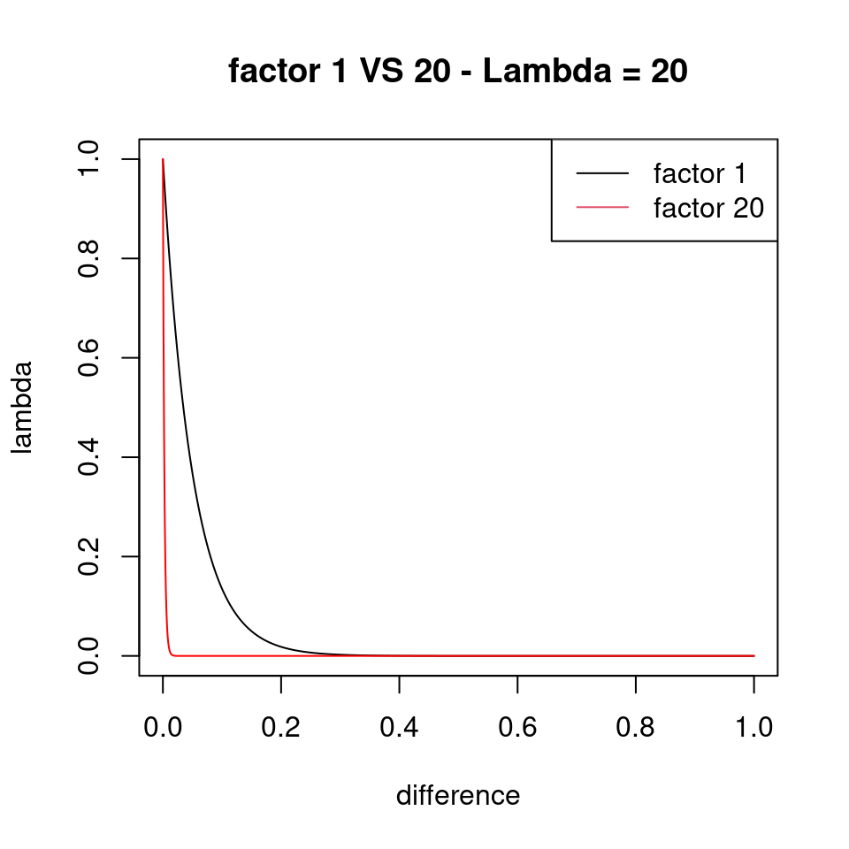
plot(kernel(seq(0,.2,0.001),lambda = 20, factor = 20), type = "l",
x = seq(0,.2,0.001), xlab = "difference", ylab = "lambda", main = "Lambda = (0.01 : 20)")
lines(kernel(seq(0,.2,0.001), lambda = 10, factor = 20),x = seq(0,.2,0.001))
lines(kernel(seq(0,.2,0.001),lambda = 5, factor = 20), x = seq(0,.2,0.001))
lines(kernel(seq(0,.2,0.001),lambda = 2, factor = 20), x = seq(0,.2,0.001))
lines(kernel(seq(0,.2,0.001),lambda = 1, factor = 20), x = seq(0,.2,0.001))
lines(kernel(seq(0,.2,0.001),lambda = .5, factor = 20), x = seq(0,.2,0.001))
lines(kernel(seq(0,.2,0.001),lambda = .01, factor = 20), x = seq(0,.2,0.001))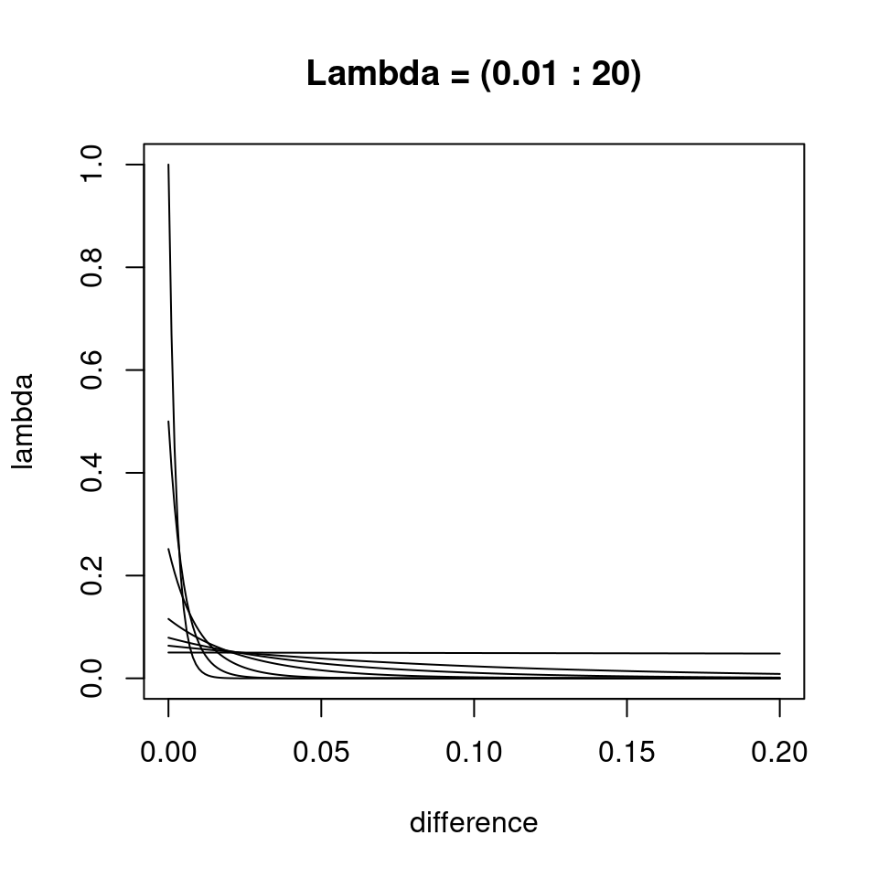
1.1.3.1 kernel is based on phyllogenetic differences between individuals
Why do we need the 20 x factor, that makes the curves steeper? The curves must be steeper, because median phylogenetic differences are low. The kernel must fit to the magnitude of phylogenetic differences between individuals. These differences are encoded in the competitionMatrices that are returned at the end of the simulatios. We can use this matrix, to asses mean difference values between focal cell and neighbours within the defined radius. We’ll do so for a neutral scenario (i.e., without density dependence or environment).
# load batch and extract null scenario
# runs <- readRDS(paste0(root, "local/runs/mstr/20250722/runs128DD.rds"))
# run <- runs$ndd0var0.01_pdd0var0.01
# or faster
runNeut <- readRDS(paste0(root, "local/summary/runNeut.rds"))
# name generation
names(runNeut$Output) <- runNeut$Model$runsDisplay the species Distribution and the corresponding competition trait values.
par(mfrow = c(1,2))
image(runNeut$Output$`262501`$specMat, main = "species ID\nneutral run", xaxt = "n", yaxt = "n")
image(runNeut$Output$`262501`$compMat, main = "Competition Matrix\nneutral run", xaxt = "n", yaxt = "n")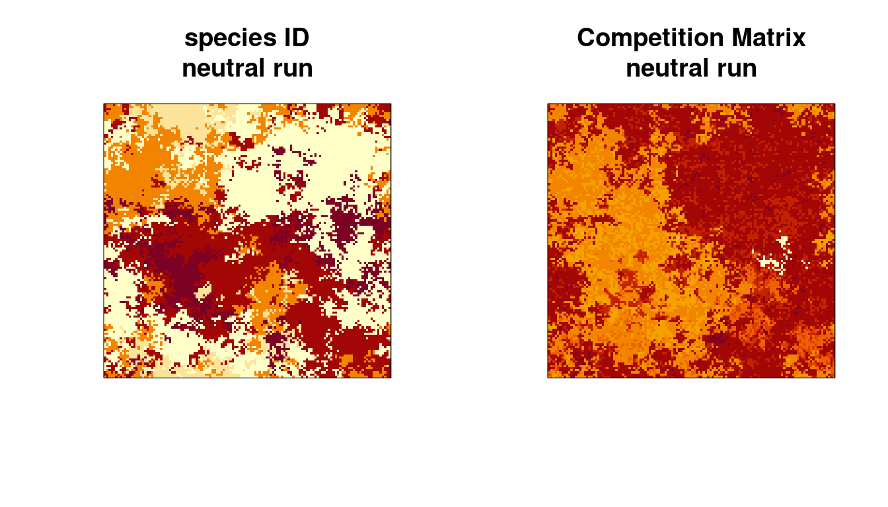
Now, we use the competition matrix to get the phyllogenetic differences, as they are calculated in the c++ simulations. First we get interspecific phyllogenetic differences, then intraspecific.
# define function to extract the values (function only for simple von Neumann neighborhood)
getDif <- function(mat) {
# Get matrix dimensions
nrows <- nrow(mat)
ncols <- ncol(mat)
# Create shifted versions of the matrix for each neighbor direction
# We'll use NA padding to handle edges
# North neighbor (shift down)
north <- rbind(NA, mat[-nrows, , drop = FALSE])
# South neighbor (shift up)
south <- rbind(mat[-1, , drop = FALSE], NA)
# West neighbor (shift right)
west <- cbind(NA, mat[, -ncols, drop = FALSE])
# East neighbor (shift left)
east <- cbind(mat[, -1, drop = FALSE], NA)
# Calculate differences for each neighbor
diff_north <- mat - north
diff_south <- mat - south
diff_west <- mat - west
diff_east <- mat - east
# Stack all differences into a 3D array for easy calculation
# Each "slice" represents differences with one neighbor type
diff_array <- array(abs(c(diff_north, diff_south, diff_west, diff_east)),
dim = c(nrows, ncols, 4))
# Calculate mean difference (ignoring NA values at edges)
mean_diff <- apply(diff_array, c(1, 2), mean, na.rm = TRUE)
# Handle edge cases where all neighbors are NA (corners/edges)
# Replace NaN with NA for cleaner output
mean_diff[is.nan(mean_diff)] <- NA
return(mean_diff)
}Total Differences Check the median phyllogenetic difference for a neutral run across all individuals.
dif <- getDif(runNeut$Output$`262501`$compMat)
q_tot <- quantile(dif) %>% t() %>% as.data.frame()
cat("quantiles of phyllogenetic differences between all individuals:\n")quantiles of phyllogenetic differences between all individuals:print(q_tot) 0% 25% 50% 75% 100%
1 0.0005798852 0.008532692 0.01533289 0.04222442 0.3055058hist(dif, breaks = 1000, main = "phyllogenetic differences\nbetween all individuals",
xlab = "phyllogenetic difference")
abline(v = q_tot$`50%`, lty = 2, col = "blue", lwd = 2)
legend("right", legend = "diff. median", lty = 2, col = "blue", bty = "n")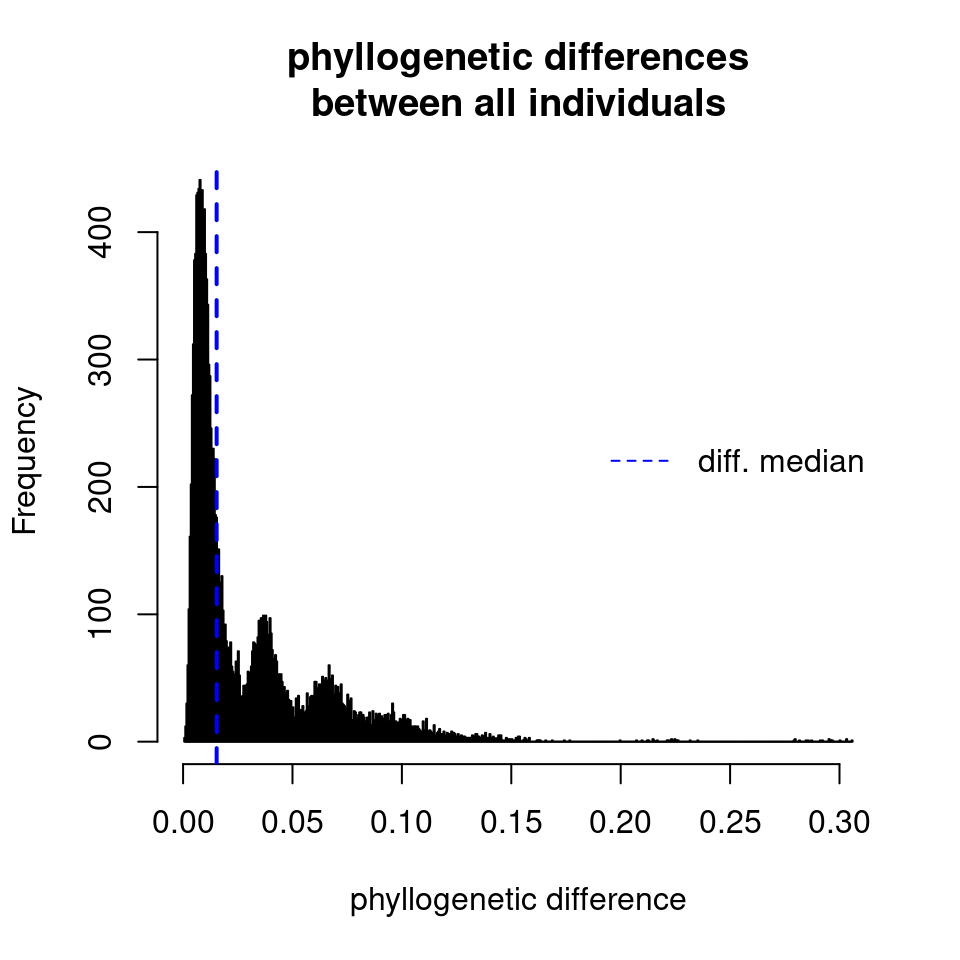
Intraspecific Differences Check the median phyllogenetic difference for a neutral run within one species.
# get species and calculate differences for all species
spec = unique(as.vector(runNeut$Output$`262501`$specMat))
q_intra <- sapply(spec, function(s) {
idx <- runNeut$Output$`262501`$specMat == s
quantile(dif[idx])
})
q_intra <- t(q_intra) %>% as.data.frame()
hist(q_intra$`50%`, breaks = 30, main = "phyllogenetic differences\nspecies wise median", xlab = "dif")
abline(v = q_tot$`50%`, lty = 2, col = "blue", lwd = 2)
legend("right", legend = "diff. median", lty = 2, col = "blue", bty = "n")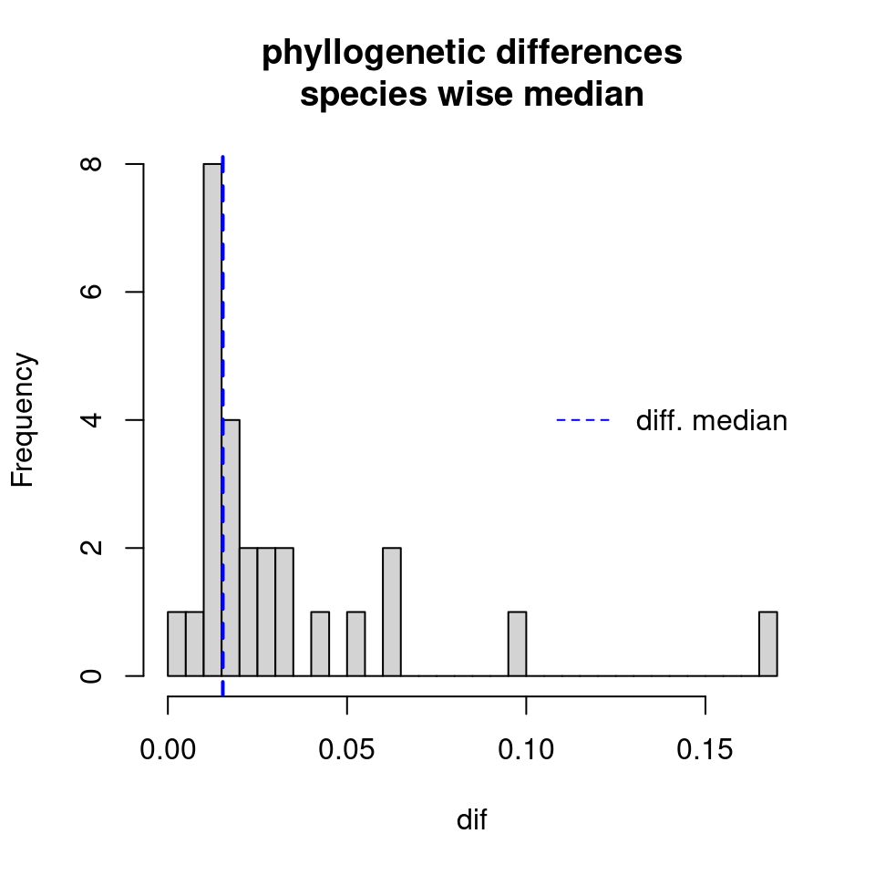
We see that most differences are extremly narrow. For total individuals, as well as within the same species. Therefore, I implemented the * 20 factor, that makes the curves steeper, declining earlier. We can add the median to previous plot and show that the kernel fits the median differences.
Crucially, if the differences are even smaller, the density effect will have much higher impact for high lambda values. However, feedbacks within the simulations will alter difference values, as e.g., in a ndd scenario differences will be much smaller then in an nDD scenario. Therefore, it is difficult to find a balance between where the curves should ideally intersect. The core idea is that on the left side from the intersection low differences increase the effect
# show that in ndd sceanrio differences are much different then nDD
# runPDD <- runs$ndd0var0.01_pdd1var0.01
runPDD <- readRDS(paste0(root, "local/summary/runPDD.rds"))
names(runPDD$Output) <- runPDD$Model$runs
# runNDD <- runs$ndd1var0.01_pdd0var0.01
runNDD <- readRDS(paste0(root, "local/summary/runNDD.rds"))
names(runNDD$Output) <- runNDD$Model$runs
difPDD <- getDif(runPDD$Output$`262501`$compMat)
q_PDD <- quantile(difPDD) %>% t() %>% as.data.frame()
difNDD <- getDif(runNDD$Output$`262501`$compMat)
q_NDD <- quantile(difNDD) %>% t() %>% as.data.frame()
cat("\nquantiles of phyllogenetic differences between all individuals:\n",
"For pDD scenario\n")
quantiles of phyllogenetic differences between all individuals:
For pDD scenarioprint(q_PDD) 0% 25% 50% 75% 100%
1 0.0003371805 0.005536309 0.007776223 0.01070271 0.03765915cat("\n For nDD scenario\n")
For nDD scenarioprint(q_NDD) 0% 25% 50% 75% 100%
1 0.0006036661 0.07486065 0.1581124 0.2748111 0.9358281plot(kernel(seq(0,.16,0.001),lambda = 20, factor = 20), type = "l",
x = seq(0,.16,0.001), xlab = "difference", ylab = "lambda", main = "Lambda = (0.01 : 20) +\n median differences")
lines(kernel(seq(0,.16,0.001), lambda = 10, factor = 20),x = seq(0,.16,0.001))
lines(kernel(seq(0,.16,0.001),lambda = 5, factor = 20), x = seq(0,.16,0.001))
lines(kernel(seq(0,.16,0.001),lambda = 2, factor = 20), x = seq(0,.16,0.001))
lines(kernel(seq(0,.16,0.001),lambda = 1, factor = 20), x = seq(0,.16,0.001))
lines(kernel(seq(0,.16,0.001),lambda = .5, factor = 20), x = seq(0,.16,0.001))
lines(kernel(seq(0,.16,0.001),lambda = .01, factor = 20), x = seq(0,.16,0.001))
abline(v = q_tot$`50%`, lty = 2, lwd = 2, col = "blue")
abline(v = q_PDD$`50%`, lty = 2, lwd = 2, col = "red")
abline(v = q_NDD$`50%`, lty = 2, lwd = 2, col = "grey")
legend("center", legend = c("neutral", "ndd", "nDD"), lty = 2, col = c("blue", "red", "grey"), bty = "n", lwd = 2)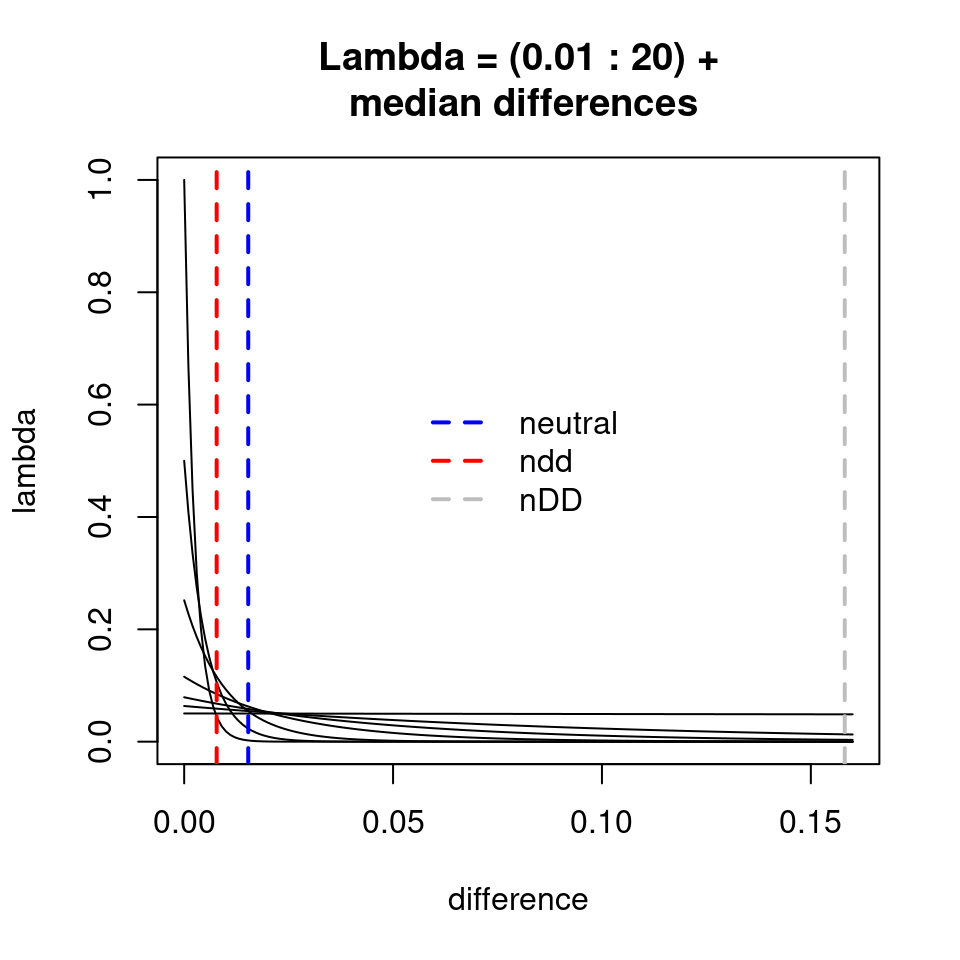
1.1.4 Demo: calculate fitness values from local densities
here, I demonstrate the results of the exponential kernel in the simulations. The used txt files are generated from the debug mode of PhyloSim
Remember: high Lambda values = high specificity. pDD
pdd001 <- read.delim(paste0(root, "/local/debug_pdd_ndd/expKernel/factor20L/fitness_mortality_N0_P0.01.txt"), col.names = c("event", "fit", "deathChance", "N_relat", "P_relat"))
pdd01 <- read.delim(paste0(root, "/local/debug_pdd_ndd/expKernel/factor20L/fitness_mortality_N0_P0.1.txt"), col.names = c("event", "fit", "deathChance", "N_relat", "P_relat"))
pdd1 <- read.delim(paste0(root, "/local/debug_pdd_ndd/expKernel/factor20L/fitness_mortality_N0_P1.txt"), col.names = c("event", "fit", "deathChance", "N_relat", "P_relat"))
pdd5 <- read.delim(paste0(root, "/local/debug_pdd_ndd/expKernel/factor20L/fitness_mortality_N0_P5.txt"), col.names = c("event", "fit", "deathChance", "N_relat", "P_relat"))
pdd10 <- read.delim(paste0(root, "/local/debug_pdd_ndd/expKernel/factor20L/fitness_mortality_N0_P10.txt"), col.names = c("event", "fit", "deathChance", "N_relat", "P_relat"))
pdd15 <- read.delim(paste0(root, "/local/debug_pdd_ndd/expKernel/factor20L/fitness_mortality_N0_P15.txt"), col.names = c("event", "fit", "deathChance", "N_relat", "P_relat"))
pdd20 <- read.delim(paste0(root, "/local/debug_pdd_ndd/expKernel/factor20L/fitness_mortality_N0_P20.txt"), col.names = c("event", "fit", "deathChance", "N_relat", "P_relat"))
# filter to get only the last 100 generations
l <- nrow(pdd001)
pdd001 <- pdd001[c((l-10000):l),]
l <- nrow(pdd01)
pdd01 <- pdd01[c((l-10000):l),]
l <- nrow(pdd1)
pdd1 <- pdd1[c((l-10000):l),]
l <- nrow(pdd5)
pdd5 <- pdd5[c((l-10000):l),]
l <- nrow(pdd10)
pdd10 <- pdd10[c((l-10000):l),]
l <- nrow(pdd15)
pdd15 <- pdd15[c((l-10000):l),]
l <- nrow(pdd20)
pdd20 <- pdd20[c((l-10000):l),]
par(mfrow = c(3,3))
plot(pdd001$fit, xlab = "individuals", ylab = "fitness werte", main = "lambda 0.01", ylim = c(1,2), col = rgb(0,0,0,.3))
plot(pdd01$fit, xlab = "individuals", ylab = "fitness werte", main = "lambda 0.1", ylim = c(1,2), col = rgb(0,0,0,.3))
plot(pdd1$fit, xlab = "individuals", ylab = "fitness werte", main = "lambda 1", ylim = c(1,2), col = rgb(0,0,0,.3))
plot(pdd5$fit, xlab = "individuals", ylab = "fitness werte", main = "lambda 5", ylim = c(1,2), col = rgb(0,0,0,.3))
plot(pdd10$fit, xlab = "individuals", ylab = "fitness werte", main = "lambda 10", ylim = c(1,2), col = rgb(0,0,0,.3))
plot(pdd15$fit, xlab = "individuals", ylab = "fitness werte", main = "lambda 15", ylim = c(1,2), col = rgb(0,0,0,.3))
plot(pdd20$fit, xlab = "individuals", ylab = "fitness werte", main = "lambda 20", ylim = c(1,2), col = rgb(0,0,0,.3))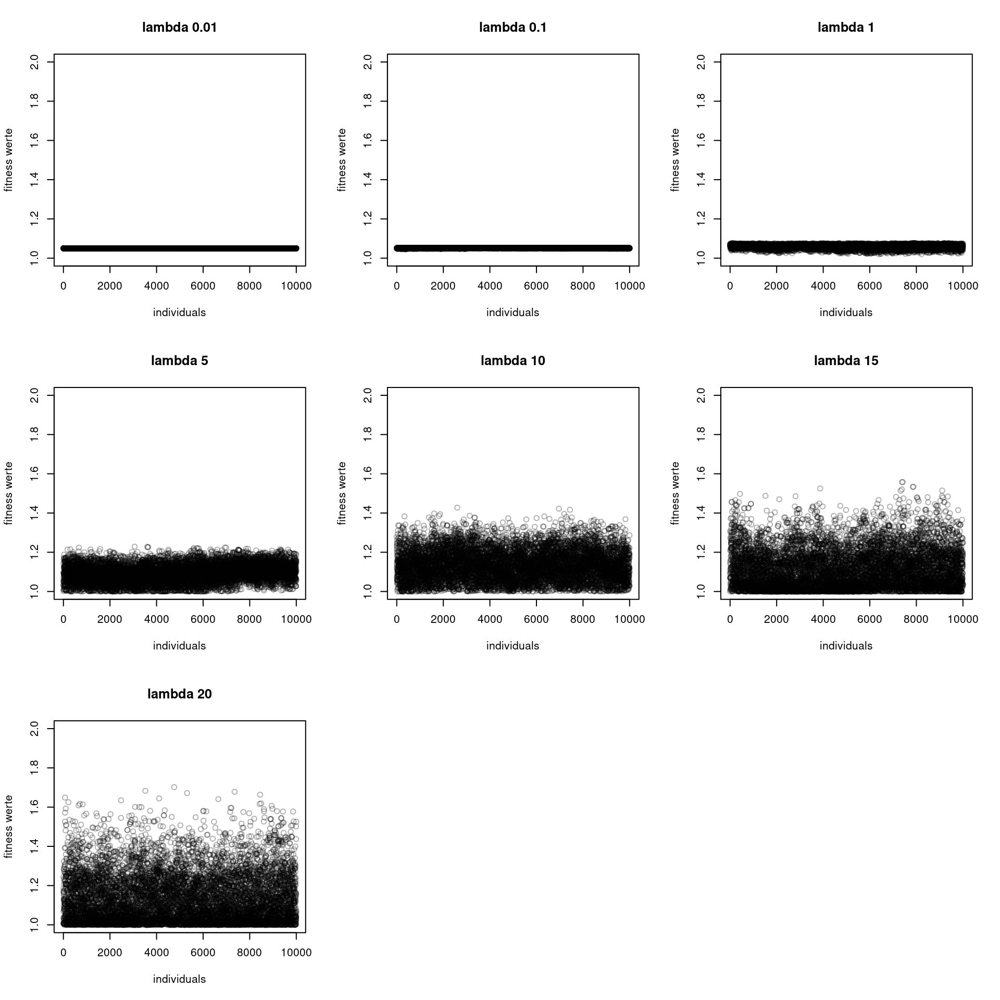
For high Lambda values we see much scattering, as closely related neighborhoods have a much stronger impact on density effect. For low Lambda values, the effect is weaker for all neighbors, even for closely ones. With increasing Lambda the gap of impacts -between unrelated and closely related neighbors- widens.
pDD and nDD Another example that shows both processes at the same time
N1_P1 <- read.delim(paste0(root, "/local/debug_pdd_ndd/expKernel/factor20NDDPDD/fitness_mortality_N1_P1.txt"), col.names = c("event", "fit", "deathChance", "N_relat", "P_relat"))
N1_P10 <- read.delim(paste0(root, "/local/debug_pdd_ndd/expKernel/factor20NDDPDD/fitness_mortality_N1_P10.txt"), col.names = c("event", "fit", "deathChance", "N_relat", "P_relat"))
N1_P20 <- read.delim(paste0(root, "/local/debug_pdd_ndd/expKernel/factor20NDDPDD/fitness_mortality_N1_P20.txt"), col.names = c("event", "fit", "deathChance", "N_relat", "P_relat"))
N10_P1 <- read.delim(paste0(root, "/local/debug_pdd_ndd/expKernel/factor20NDDPDD/fitness_mortality_N10_P1.txt"), col.names = c("event", "fit", "deathChance", "N_relat", "P_relat"))
N10_P10 <- read.delim(paste0(root, "/local/debug_pdd_ndd/expKernel/factor20NDDPDD/fitness_mortality_N10_P10.txt"), col.names = c("event", "fit", "deathChance", "N_relat", "P_relat"))
N10_P20 <- read.delim(paste0(root, "/local/debug_pdd_ndd/expKernel/factor20NDDPDD/fitness_mortality_N10_P20.txt"), col.names = c("event", "fit", "deathChance", "N_relat", "P_relat"))
N20_P1 <- read.delim(paste0(root, "/local/debug_pdd_ndd/expKernel/factor20NDDPDD/fitness_mortality_N20_P1.txt"), col.names = c("event", "fit", "deathChance", "N_relat", "P_relat"))
N20_P10 <- read.delim(paste0(root, "/local/debug_pdd_ndd/expKernel/factor20NDDPDD/fitness_mortality_N20_P10.txt"), col.names = c("event", "fit", "deathChance", "N_relat", "P_relat"))
N20_P20 <- read.delim(paste0(root, "/local/debug_pdd_ndd/expKernel/factor20NDDPDD/fitness_mortality_N20_P20.txt"), col.names = c("event", "fit", "deathChance", "N_relat", "P_relat"))
l <- nrow(N1_P1)
N1_P1 <- N1_P1[c((l-10000):l),]
l <- nrow(N1_P10)
N1_P10 <- N1_P10[c((l-10000):l),]
l <- nrow(N1_P20)
N1_P20 <- N1_P20[c((l-10000):l),]
l <- nrow(N10_P1)
N10_P1 <- N10_P1[c((l-10000):l),]
l <- nrow(N10_P10)
N10_P10 <- N10_P10[c((l-10000):l),]
l <- nrow(N10_P20)
N10_P20 <- N10_P20[c((l-10000):l),]
l <- nrow(N20_P1)
N20_P1 <- N20_P1[c((l-10000):l),]
l <- nrow(N20_P10)
N20_P10 <- N20_P10[c((l-10000):l),]
l <- nrow(N20_P20)
N20_P20 <- N20_P20[c((l-10000):l),]
par(mfrow = c(3,3))
plot(N1_P1$fit, xlab = "individuals", ylab = "fitness", main = "N1_P1", ylim = c(0,3), col = rgb(0,0,0,.1), cex = .3)
abline( h = 1, lty = 2, col = "grey", lwd = 2)
plot(N1_P10$fit, xlab = "individuals", ylab = "fitness", main = "N1_P10", ylim = c(0,3), col = rgb(0,0,0,.1), cex = .3)
abline( h = 1, lty = 2, col = "grey", lwd = 2)
plot(N1_P20$fit, xlab = "individuals", ylab = "fitness", main = "N1_P20", ylim = c(0,3), col = rgb(0,0,0,.1), cex = .3)
abline( h = 1, lty = 2, col = "grey", lwd = 2)
plot(N10_P1$fit, xlab = "individuals", ylab = "fitness", main = "N10_P1", ylim = c(0,3), col = rgb(0,0,0,.1), cex = .3)
abline( h = 1, lty = 2, col = "grey", lwd = 2)
plot(N10_P10$fit, xlab = "individuals", ylab = "fitness", main = "N10_P10", ylim = c(0,3), col = rgb(0,0,0,.1), cex = .3)
abline( h = 1, lty = 2, col = "grey", lwd = 2)
plot(N10_P20$fit, xlab = "individuals", ylab = "fitness", main = "N10_P20", ylim = c(0,3), col = rgb(0,0,0,.1), cex = .3)
abline( h = 1, lty = 2, col = "grey", lwd = 2)
plot(N20_P1$fit, xlab = "individuals", ylab = "fitness", main = "N20_P1", ylim = c(0,3), col = rgb(0,0,0,.1), cex = .3)
abline( h = 1, lty = 2, col = "grey", lwd = 2)
plot(N20_P10$fit, xlab = "individuals", ylab = "fitness", main = "N20_P10", ylim = c(0,3), col = rgb(0,0,0,.1), cex = .3)
abline( h = 1, lty = 2, col = "grey", lwd = 2)
plot(N20_P20$fit, xlab = "individuals", ylab = "fitness", main = "N20_P20", ylim = c(0,3), col = rgb(0,0,0,.1), cex = .3)
abline( h = 1, lty = 2, col = "grey", lwd = 2)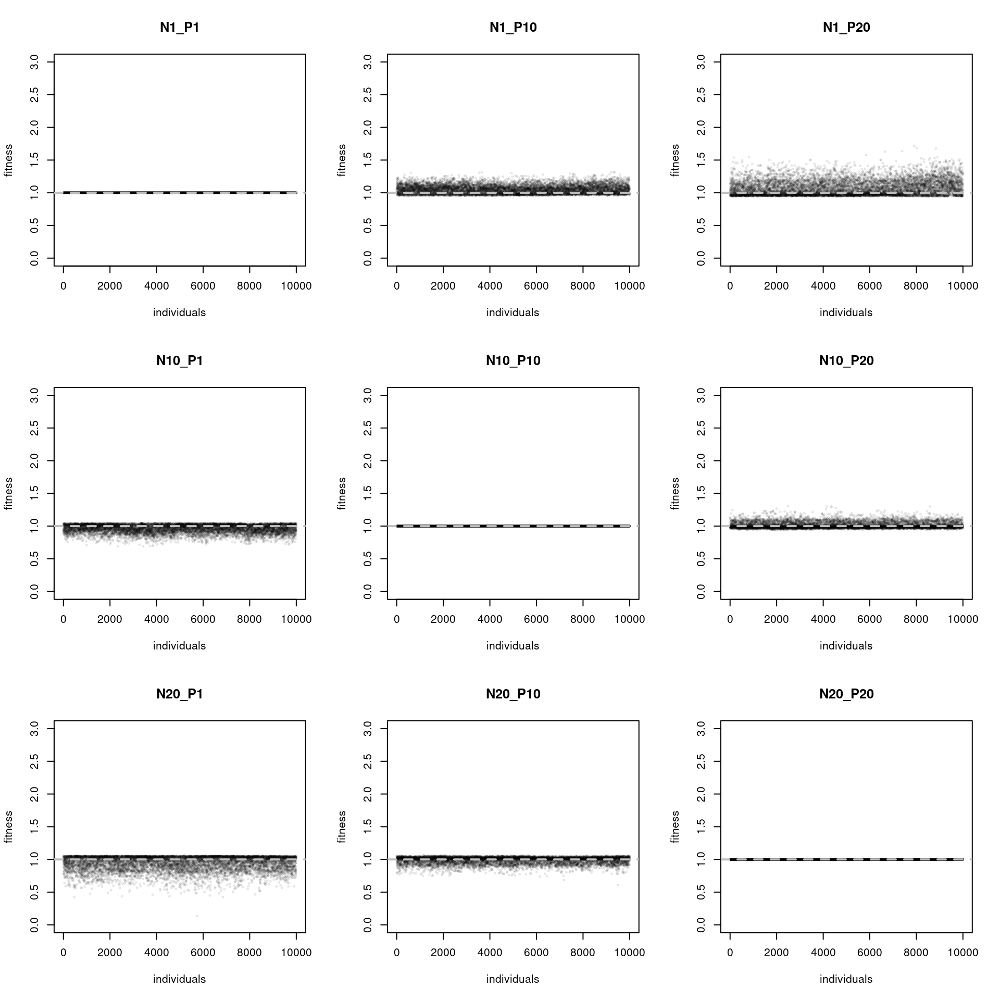
Notice that if both Lambda’s (for nDD and pDD) are the same, the effects is neutralized.
1.2 Quantification of stabilazation: Mortality change for + 1 conspecific individual
According to Hülsmann et al. 2024 I quantify the effect of stab CDD by - fitting a binomial model - calculate probability of mortality without conspecific neighbors (= mort0) - calculate probability of mortality with one conspecific neighbor (= mort1) - calcualte change in probability (mortChange = mort1 - mort0)
This approach has one problem. For a greater distance kernel, the total DD effects remains the same, but allocated and diluted among multiple conspecific neighbors. However, the mortChange quantifies the effect of both, pDD and nDD per one added neighbor. Thus, if e.g., distance kernel pDD > nDD, pDD will be underestimated, as its effect is spread across multiple conspecific neighbors.
This approach is done twice. First, the mort_change through all individuals is measured. Second, the species-wise mort_change is measured and checked, if it correlates with the species abundance.
1.2.1 Mortality change through all individuals
1.2.1.1 Data preparation
Fitness base mortality ratio = 10.
the fitness base mortality ratio (fbmr) skips fitness dependent death every fbmr’th step. E.g., fbmr = 10 would cause always death, independent of fitness. In this batch, it is set to 10. In the next, to 3000. We’ll see if fbmr changes the mortChange coefficient dramatically. But, first things first.
# load in runs with exp kernel
runs_i <- readRDS(paste0(root, "/local/runs/mstr/20250807/runs_i.rds"))Next, we
- calculate the numbers of conspecific neighbors
- asess if an individuls dies in the consequent generation. Therefore, we ran the simulations with sort(c(seq(x,y), seq(x,y)+1)). Again, we assess death after each period in time trough the immediately next generation (e.g, focal generation 1000 -> individuals dead at 1001 ?)
# get conspecific neighbors and proper naming
runs_i <- getConNeigh(runs_i)Next, we convert the matrix data into tabular data. With the argument detailedParams we include the parameter settings a seperate cols. We save the tabular data.
# convert matrices to tabular data. This is done parallel, as it takes longer
cl <- makeCluster(length(runs_i))
clusterExport(cl, c("getMatToTab", "runs_i"))
tab_i <- parLapply(cl = cl, X = runs_i, fun = function(x) getMatToTab(x, detailedParams = TRUE))
# saveRDS(tab_i, paste0(root, "local/runs/mstr/20250807/tab_i.rds"))We only keep important parameters in the naming
tab_i <- readRDS(paste0(root, "local/runs/mstr/20250807/tab_i.rds"))namesShort <- names(tab_i) %>%
stringr::str_remove("_disp.+") %>%
stringr::str_remove("Cut1") %>%
stringr::str_remove("Cut1") %>%
paste0("_fbmr10")Now, we delete every second generation. Remember, we had to calculate the death in the consequent generation. After doing so, the generation x + 1 is no longer needed and is discarded.
# keep only first timespot in census
tab_ix <- lapply(tab_i, function(x){
res <- x %>%
filter(census %% 2 == 0,
census > 175000) # focus only on last censii
return(res)
})
names(tab_ix) <- namesShort1.2.1.2 Statistical analysis
We use a binomial glm and calculate the change in mortality for (one conspecific neighbor) - (no conspecific neighbors). As also described in @ref(sec-mortality-change). To calculate uncertainties, we use a non-parametric boot strap approach, because we want to aknowledge error propagation of each term.
boot_mort_change <- function(x, B = 1000) {
boot_vals <- numeric(B)
for (i in seq_len(B)) {
xb <- x[sample(nrow(x), replace = TRUE), ]
fm <- tryCatch(glm(mortNextGen ~ con, family = binomial(), data = xb),
error = function(e) return(NA))
if (is.na(fm)[1]) {
boot_vals[i] <- NA
} else {
est <- coef(fm)
mort0 <- plogis(est["(Intercept)"])
mort1 <- plogis(est["(Intercept)"] + est["con"])
boot_vals[i] <- mort1 - mort0
}
}
ci <- quantile(boot_vals, c(0.025, 0.975), na.rm = TRUE) # allows error propagation
point <- mean(boot_vals, na.rm = TRUE)
return(c(mort_change = point, ci_lower = ci[1], ci_upper = ci[2]))
}cl <- makeCluster(length(tab_ix))
clusterExport(cl, c("boot_mort_change", "tab_ix"))
boot_results <- parLapply(cl = cl, X = tab_ix, fun = function(x) boot_mort_change(x, B = 500))boot_results_x <- do.call(cbind, boot_results) %>% as.data.frame()
# saveRDS(boot_results_x, "~/cyber_synch/local/summary/boot_results_x.rds")boot_results_x <- readRDS(paste0(root, "local/summary/boot_results_x.rds"))1.2.1.3 Visualization
par(mar = c(13,4,1,1))
x <- 1:ncol(boot_results_x)
y <- as.numeric(boot_results_x["mort_change",])
ci_lower <- as.numeric(boot_results_x["ci_lower",])
ci_upper <- as.numeric(boot_results_x["ci_upper",])
plot(y = y, x = x, ylab = "mortChange", xlab = "", xaxt = "n", ylim = range(ci_lower, ci_upper))
axis(1, at = x, labels = namesShort, las = 2)
arrows(x0 = x, y0 = ci_lower,
x1 = x, y1 = ci_upper,
angle = 90, code = 3, length = 0.05)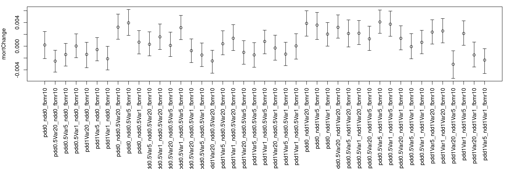
Next, we show the effect of the density strength and variance on the mortality change
mort_long <- boot_results_x %>%
tibble::rownames_to_column("metric") %>%
pivot_longer(cols = -metric, names_to = "param_combo", values_to = "value") %>%
pivot_wider(names_from = metric, values_from = value)
meta_df <- lapply(tab_ix, function(x) {
data.frame(
nDD = x$nDD[1],
pDD = x$pDD[1],
nDDVar = x$nDDVar[1],
pDDVar = x$pDDVar[1]
)
}) %>% bind_rows()
mort_long <- bind_cols(mort_long, meta_df)
# Plot 1: change in mortality vs NDD/PDD strength
ggplot(mort_long, aes(x = factor(nDD), y = factor(pDD), fill = mort_change)) +
geom_point(shape = 21, size = 3, position = position_jitter(width = 0.3, height = 0.3)) +
scale_fill_viridis_c(name = "change in\nmortality") +
theme_minimal() +
labs(x = "NDD Strength", y = "PDD Strength")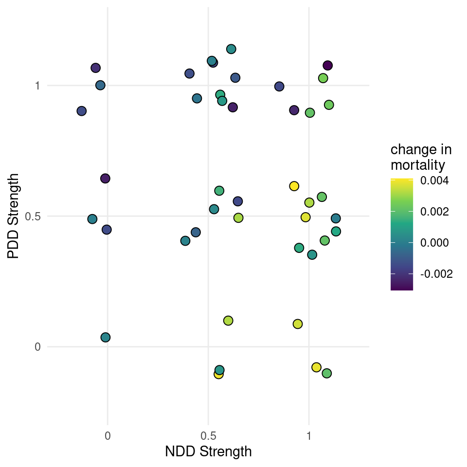
# Plot 2: change in mortality vs NDD/PDD variance
ggplot(mort_long, aes(x = factor(nDDVar), y = factor(pDDVar), fill = mort_change)) +
geom_point(shape = 21, size = 3, position = position_jitter(width = 0.3, height = 0.3)) +
scale_fill_viridis_c(name = "change in\nmortality") +
theme_minimal() +
labs(x = "NDD Variance", y = "PDD Variance")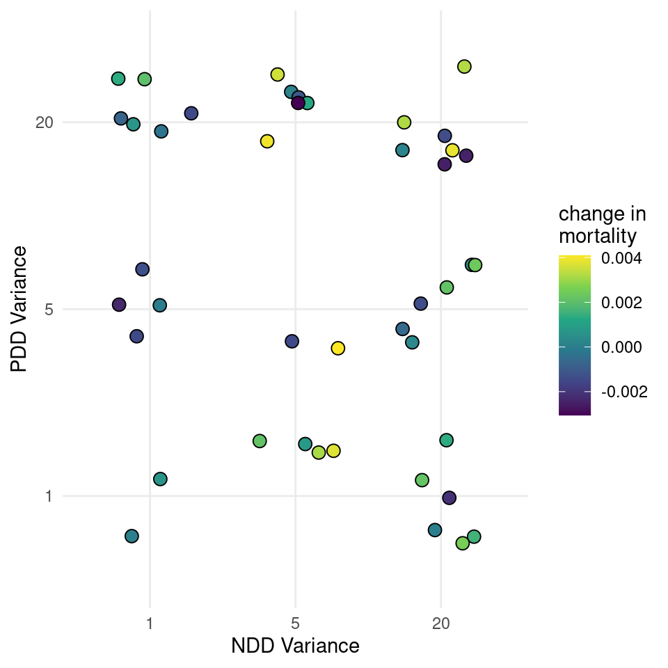
1.2.2 Mortality change species-wise: correaltion between species abundance and change in mortality
Literature often finds a correlation between stabilizing strength and the abundance of a species. To test this, we redo the analysis but now species-wise and add abundance and “NperCen”, a correct abundance measure, to the data.
1.2.2.1 Data preparation
Additionally, besides using abundance as metric for the correaltion(abund. , stabilization), we correct for the number of generations, where a species is present. E.g, if specId 1 survives long enough, it will be present in 3 generation \(x_{n}, x_{n+1}, x_{n+2}\). This creates a bias. We correct by dividing the total abundance (throughout the whole time series) by number of generations, the species is present (E.g., \(\frac{5041}{3}\)). This new metric is called NbyCen. Finally, we join all information together.
Also, we filter out very rare species, to increase statistical power.
# calculate number of censii in which species occur
NbyCen <- lapply(tab_ix, function(x){
res <- x %>%
group_by(specId) %>%
summarise(n_census = n_distinct(census))
return(res)
})
# add abundances and (abundances / number of censii in which they occur)
tab_ixx <- lapply(seq_along(tab_ix), function(i){
res <- tab_ix[[i]] %>%
group_by(specId) %>%
mutate(abund = n()) %>%
left_join(NbyCen[[i]], by = "specId") %>%
mutate(NperCen = abund / n_census) %>%
ungroup()
return(res)
})
tab_iS <- lapply(tab_ixx, function(x){
res <- x %>%
filter(abund > 30)
return(res)
})1.2.2.2 Statistical Analysis
cl <- makeCluster(length(tab_iS))
mort_changeS <- parLapply(cl, tab_iS, function(x) {
i <- 1 # index
len <- length(unique(x$specId))
res <- data.frame(specId = rep(NA, len),
abund = rep(NA, len),
NperCen = rep(NA, len),
mort_change = rep(NA, len))
for (sID in unique(x$specId)) {
fm <- glm(formula = "mortNextGen ~ con",
family = binomial(),
data = x[which(x$specId == sID), ])
sfm <- summary(fm)$coefficients
mort0 <- plogis(sfm["(Intercept)", "Estimate"])
mort1 <- plogis(sfm["con", "Estimate"] * 1 + sfm["(Intercept)", "Estimate"])
res$mort_change[i] <- (mort1 - mort0)
res$abund[i] <- x$abund[which(x$specId == sID)][1]
res$NperCen[i] <- x$NperCen[which(x$specId == sID)][1]
res$specId[i] <- sID
i <- i + 1
}
return(res)
})
# Stop the cluster
stopCluster(cl)# add regressionline mc ~ abund
mort_changeS <- lapply(mort_changeS, function(x){
fm <- lm(mort_change ~ log(abund), data = x)
x$int = fm$coefficients[1]
x$slope = fm$coefficients[2]
return(x)
})
mort_changeSx <- lapply(mort_changeS, function(x){
fm <- lm(mort_change ~ log(NperCen), data = x)
x$int = fm$coefficients[1]
x$slope = fm$coefficients[2]
return(x)
})1.2.2.3 Visualization
names <- names(tab_ix) %>% stringr::str_remove("_fbmr10")
par(mfrow = c(7,7), mar = c(1,3,3,1))
invisible(sapply(seq_along(mort_changeS), function(i){
x <- mort_changeS[[i]]
plot(x = log(x$abund), y = x$mort_change,
ylim = c(-0.1, 0.1), xlab = "abund", ylab = "mortality\nchange",
cex = .3, col = rgb(0,0,0,.05),
main = names[i], cex.main = .8)
abline(h = 0, col = "steelblue")
abline(x$int[1], x$slope[1], lty = 2, col = "orange")
}))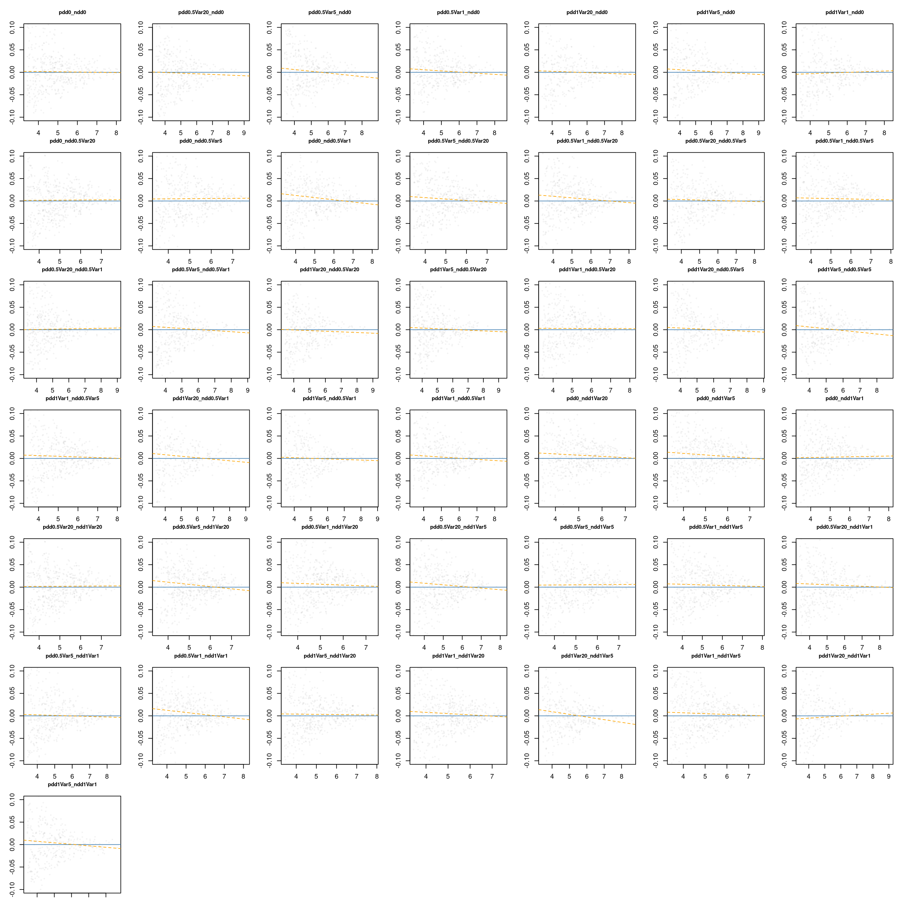
names <- names(tab_ix) %>% stringr::str_remove("_fbmr10")
par(mfrow = c(7,7), mar = c(1,3,3,1))
invisible(sapply(seq_along(mort_changeSx), function(i){
x <- mort_changeSx[[i]]
plot(x = log(x$NperCen), y = x$mort_change,
ylim = c(-0.1, 0.1), xlab = "abund", ylab = "mortality\nchange",
cex = .3, col = rgb(0,0,0,.05),
main = names[i], cex.main = .8)
abline(h = 0, col = "steelblue")
abline(x$int[1], x$slope[1], lty = 2, col = "orange")
}))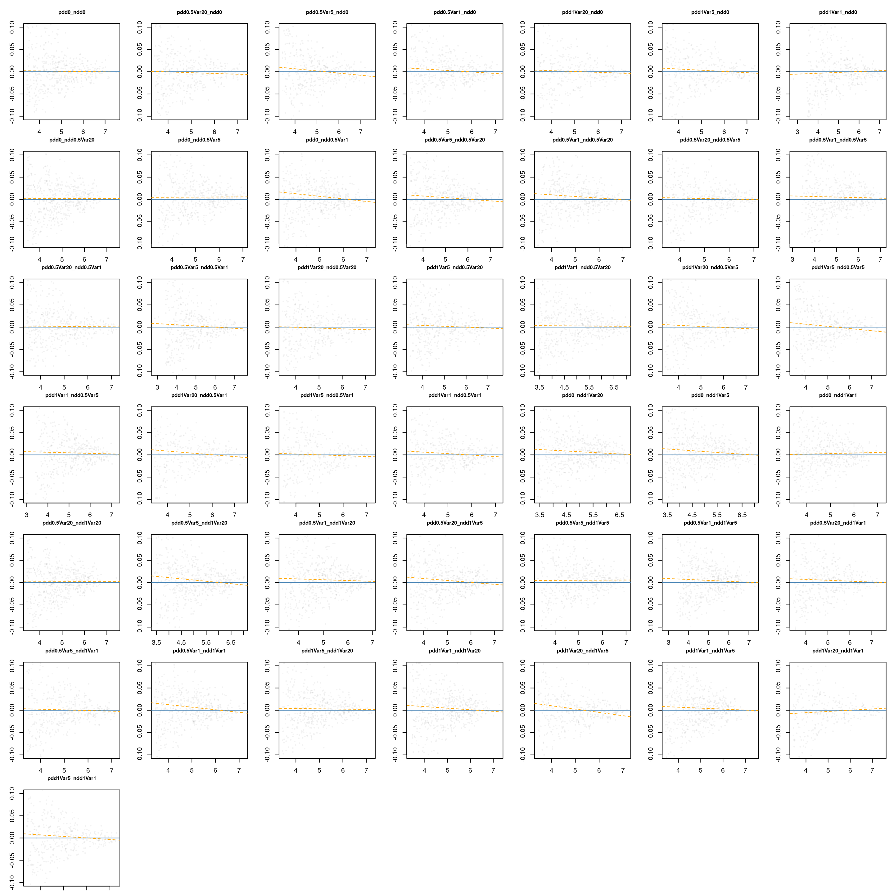
1.3 Analyzing Species richness as a measure of coexistence
Scientific consensus is that stabilization increases Coexistence. Coexistence can be described by the number of species that coexist within a community.
# if not loaded, load raw runs
runs_i <- readRDS(paste0(root, "/local/runs/mstr/20250807/runs_i.rds"))par(mfrow = c(11,4), mar = c(1,3,3,1), oma = c(5,5,5,5))
S <- getSpecTime(runs_i, ymax = 40, title = names(runs_i))
meanS <- sapply(S, function(x) mean(x$spec_rich))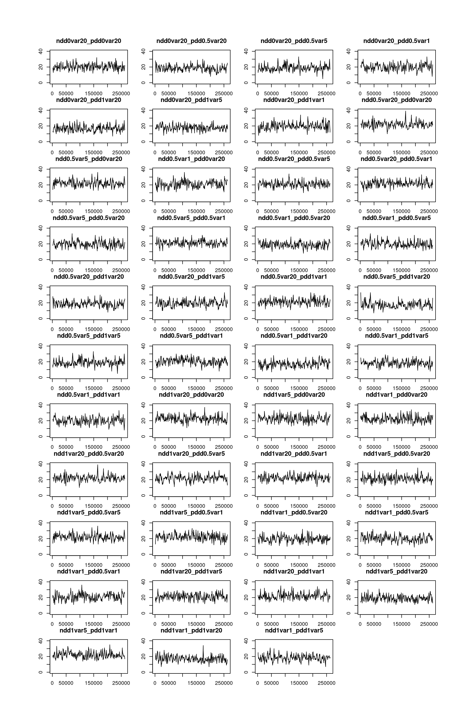
par(mar = c(15,6,1,3))
plot(meanS, xaxt = "n", xlab = "", ylab = "species richness")
axis(1, at = x, labels = names(runs_i), las = 2)
segments(x0 = x, y0 = 0, x1 = x, y1 = meanS, lty = 2)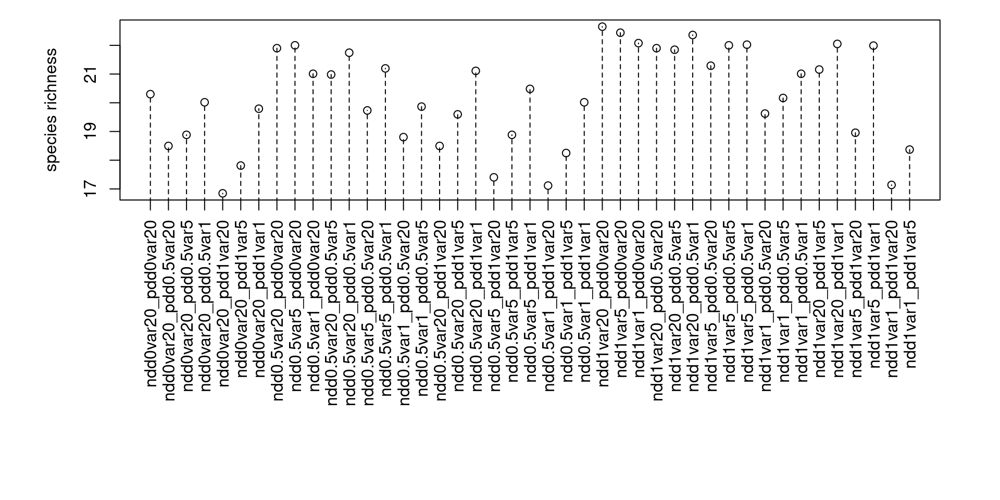